Moon
The early Moon cards
The Moon card is not among the earliest partial deck preserved, that of the Cary-Yale (CY), also known as the Visconti di Modrone, from a long-time owner. Nor is it in the second, from the same region, Lombardy (Cremona and Milan), the "first artist" cards of the Pierpont-Morgan-Bergamo, also known as the Colleoni-Bagaliati. The earliest is actually in the so-called "Charles VI," named for its earliest once-supposed owner, the king of France, in around 1496 (center below). It is actually from Florence, probably done for the Medici in around 1460. It shows two astronomers or astrologers (one word sufficed for both then), one with compasses, one of the two instruments allowed in Euclidean geometry, held up to the moon. The other is drawing using the same instrument. Exactly what they are doing is not clear. Above them is what I take to be a crescent moon, where the cark part is actually visible on a clear night. Perhaps they are trying to calculate the size of the earth, from the comparison of the two circles, or the distance from the earth to the moon, by comparing the two circles. Or it may be that it is an illustration of the hermetic principle of "as above, so below". In that case they may be casting a horoscope.
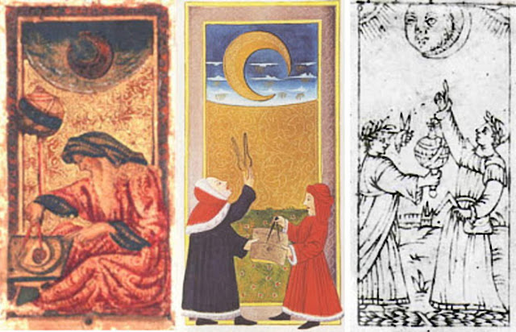
The moon card is one of three so-called "celestials", the others being the Star and the Sun. As a sphere above the earth, that of the moon should have been next after fire, as opposed to the Sun. On the other hand, it is second in order of brightness.That, for card players unschooled in Ptolemaic astronomy, would have been easier to remember. What the three have in common, besides their celestial nature, is their use in measuring time. The moon, with its phases, gives the week and an approximation of the month (assuming 12 of them in a year), while the sun gives the hour, day, the quarter (by equinoxes and solstices), and the year. This relationship to time is made explicit in the Minchiate version of the card, with its clockface, or sun dial. It was also in Petrarch's I Trionfi, whose Triumph of Time has the sun as its opening image.
In the latter capacity the object held in her left hand might be a bowstring, which without its bow is just a rope. There is a story in Boccaccio in which her virgin devotees in the forest all desert her to marry handsome bachelors. In relation to Diana, this would signify her practice of strict virginity, which the maidens renounced by breaking their bow. Hence the sad expression on her face. On the other hand, the object might be a bridle, a traditional symbol of Temperance, in which a maiden's devotion to Diana might help her to maintain. 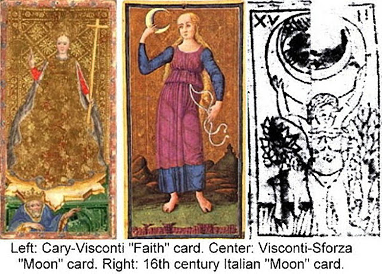
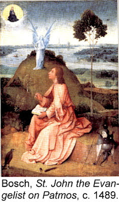 Given that Diana was, despite her virginity, also the goddess of childbirth, Diana's expression might be that of sadness for those who lost their lives in that act. An example close to the Sforza who probably commissioned this card, is their sister Elisabeta, who married at her brother's command at the early age of 13 and later died in childbirth. There is a certain resemblance between her, as thought to be depicted in certain religious paintings, and the maiden who appears here, not only on this card but the Star and Temperance as well, done by the same artist later than the original cards for the deck.
Another association between this card and other tarot-related imagery could be to the virtue of Faith. In representations of that virtue, the communion wafer and cup held aloft would take the place of the moon, and her cross-staff replace the rope or leather strap in her other card. This is especially evident for the Visconti-Sforza We must recall that while the previous hand-painted deck for the ruling family of Milan had Hope, Faith, and Charity, they do not appear in the next deck, the PMB, while instead we have the celestials.
There is a painting by Heronymous Bosch very reminiscent of
both tarot cards, that of Faith and that of the Moon, namely that of St. John alone on the island of Patmos, writing his Apocalypse with visions of the demons like the one behind him controlling the show.
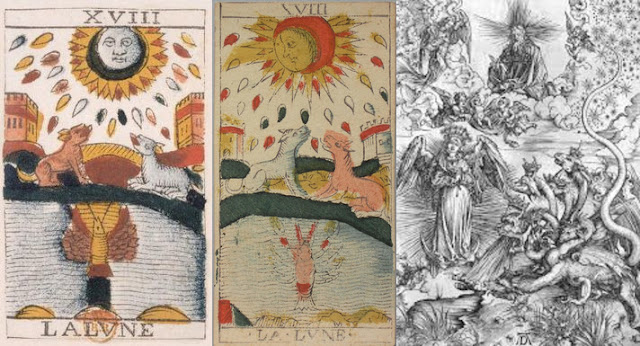
The Moon card that corresponds most closely to this composition is the familiar version of the Tarot de Marseille (above left Noblet and Chosson, both unrestored and so with faded colors); the lobster or crayfish in the depths corresponds somewhat to the devil behind St. John. There is a also certain parallel here with Durer's depiction of the "woman clothed with the sun" of Rev. 32, who has to flee with her child from the great serpent.
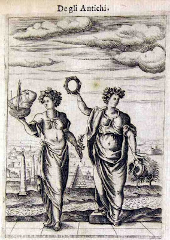
Here, as in the case of the Star card, there is also a connection to Isis as god of sailors, as seen on the left (from Cartari's 16th century Images of the gods of the Ancients).The priestess on the right has a crescent on her head, the one on the left holds a ship, while pyramids and obelsiks are behind them. Apuleius had described the Isaiac spring rite of blessing a new ship in his famous Latin novel, The Metamorphoses, Book XI. The moon illuminates the darkness and gives an orientation to the traveler who lacks other landmarks. In later days this function was given to Venus, and then, in a spiritual sense to the Virgin Mary
The "Marseille" style Moon card
The Marseille style of card is first seen in around 1500, in a sheet of uncut cards probably used as part of a book binding. There is a large body of water, a monstrous crayfish, two towers, and a path between them. All that is missing are the dogs, or dog and wolf. But I seem to see here, on the banks of the lake, a pair of crocodiles. One of them even seems to hold something in his jaws.

The details on the Cary Sheet image are enough to make one dizzy. Alongside the towers are large plants - or are they obelisks, with a temple in the middle, reinforcing the idea of crocodiles, with the lake perhaps one of the resevoirs that the Egyptians built to save the waters of the Nile flood from going out to sea. If the Star card is Sothis, announcing the Flood, we are now in the month later known as July, ruled by the Moon and the zodiacal sign of Cancer, a term in Latin ambiguous between crayfish and crab. 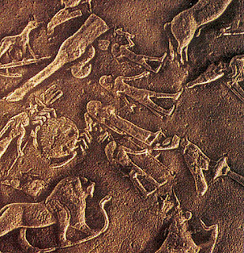But there is not a special connection between either a crayfish or a crab in a fresh-water lake, pond, or even river in Egypt. It was not an Egyptian symbol, nor, that I can find, was it ever thought to be one.
{kind=link}
On the other hand there is another creature that is very much appropriate in an Egyptian setting, namely the scarab, which resembled the crab enough that the Greeks, in their syncretic version of Egyptian religiousity, sometimes put the sacred beetle, in Greek scarabeo, as the equivalent of Cancer in the Greco-Egyptian temples they built. In one case. in a circular zodiac they put in a small chapel on the roof of the Temple of Hathor at Denderah, they put a crab-like beetle in the space between Gemini and Leo. However whether this curious hybrid was associated with the sign of Cancer in the place and time of the Cary Sheet is unknown.
 By the 17th century. as we have seen, the dogs finally appear, in the Noblet tarot of c.
1660. Even though one is gray, they both look the same in Noblet. Dogs
of course are associated with Diana, goddess of the hunt and of the
moon. But Diana is also one aspect of Hecate, whose animal it also is,
as in the amulet below. Here a snake, which in Latin can take the same
word as a dragon, draco, is another of her companions. The torch is
another attribute of this goddess of relevance to the card.
By the 17th century. as we have seen, the dogs finally appear, in the Noblet tarot of c.
1660. Even though one is gray, they both look the same in Noblet. Dogs
of course are associated with Diana, goddess of the hunt and of the
moon. But Diana is also one aspect of Hecate, whose animal it also is,
as in the amulet below. Here a snake, which in Latin can take the same
word as a dragon, draco, is another of her companions. The torch is
another attribute of this goddess of relevance to the card.For me it inevitably brings to mind a certain statue in New York harbor. Let us say only that true symbols live forever. Hecate, too, was a goddess of liberation, even if she was literally demonized throughout history.
 Plutarch in his On the Face that Appears in the Moon, a
2nd century Greek text that came to Italy in a couple of manuscripts by
around 1425, advanced the hypothesis that what looks like a face on the
moon is really the outline of mountains, in the midst of which were
great basins; to this day the featureless placees on the moon are called
"Mare", Latin for "sea". Thus the moon became the setting for an allegory. After passing through the storms between the earth and the moon and resting at a place he called, the souls that had not been swept back to earth landed in a place called "Hecate's Recess", for further trials. He relates (Loeb translation, pp. 210-211):
Plutarch in his On the Face that Appears in the Moon, a
2nd century Greek text that came to Italy in a couple of manuscripts by
around 1425, advanced the hypothesis that what looks like a face on the
moon is really the outline of mountains, in the midst of which were
great basins; to this day the featureless placees on the moon are called
"Mare", Latin for "sea". Thus the moon became the setting for an allegory. After passing through the storms between the earth and the moon and resting at a place he called, the souls that had not been swept back to earth landed in a place called "Hecate's Recess", for further trials. He relates (Loeb translation, pp. 210-211):... just as our earth contains gulfs that are deep and extensive, one here pouring in towards us through the Pillars of Heracles and outside the Caspian and the Red Sea with its gulfs, so those features are depths and hollows of the moon. The largest of them is called "Hecatê's Recess," where the souls suffer and exact penalties for whatever they have endured or committed after having already become Spirits; and the two long ones are called "the Gates", for through them pass the souls now to the side of the moon that faces heaven and now back to the side that faces earth. The side of the moon towards heaven is named "Elysian plain," the hither side "House of counter-terrestrial Phersephonê."
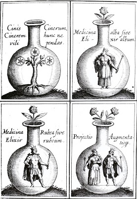
Persephone is yet another aspect of Hecate. At the end of a certain time souls would pass between mountains through one of two passes, one eventually leading back to earth and the other to the other side of the moon, after which the next stage of the journey would be the Sun. In that sense the two towers would be the "Gates", to see that none went through the wrong gate, and the dogs the guardians of these gates. Thus the next card in sequence is the Sun. In this case the transition is rather like that in the frontispiece of an 18th century book on alchemy (below). In alchemy the Albedo was a major accomplishment in the work, in many cases portrayed as near the end. It represented the stage corresponding to silver amng metals and the Queen among allegorical figures (at left, from John Milius, Anatomy of Alchemy, 1620s. What followed would be gold and the King.This Neoplatonic interpretation in terms of the journey of the soul after death does not preclude other interpretations, of course: towers were necessary to monitor ships coming in and out of a harbor, and in that way associated with the tides and so the moon. 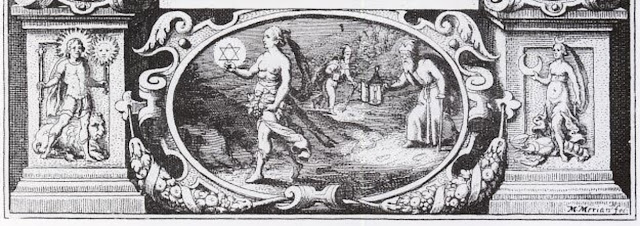
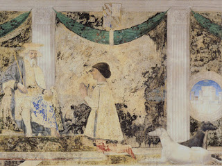 There are likewise other less exotic historical meanings to the dogs, especially their colors. In the Templo Malatesta in Rimini, the insides of which were chosen by the Lord of Rimini Sigismundo Malatesta in the late 15th century, there are two dogs sitting at the feet of the Lord's likeness praying to his patron saint St. Sigismund. In the detail at right, they are both in the lower right corner, the black one facing right and the white one facing left. According to Andrea Vitali in his iconological essay on the Moon (http://www.letarot.it/page.aspx?id=130#), these dogs are his protectors, one by day and the other by night.

In other words, they are dogs of illusion, not to be trusted. Only those who in body, the Oracle says, can gaze at them and thereby know the way to the sun as opposed the return to illusion.
Court de Gebelin in his essay on the tarot of 1781 had another interpretation of the dogs. Clement of Alexandria had reported that the Egyptians likened the Tropics to two dogs as gatekeepers or guardians. He says, in his Stromata, (https://en.wikisource.org/wiki/Ante-Nicene_Fathers/Volume_II/CLEMENT_OF_ALEXANDRIA/The_Stromata,_or_Miscellanies/Book_V/Chapter_VII):
And some will have it that by the dogs are meant the tropics, which guard and watch the sun’s passage to the south and north.That is to say, they keep the moon and the sun from straying too far north in the summer - above the Tropic of Cancer - and south in the winter - below the Tropic of Capricorn.
Gebelin also had an Egyptian interpretation of the drops below the moon; the Greek travel writer Pausanias had reported that what made the Nile rise was the "tears of Isis":
I have heard a similar story from a man of Phoenicia, that the Egyptians hold the feast for Isis at a time when they say she is mourning for Osiris. At this time the Nile begins to rise, and it is a saying among many of the natives that what makes the river rise and water their fields is the tears of Isis.Her tears would well have been understood, as Plutarch related, as the summer rains in Ethiopia. The river's rising was also symbolically the "rising" of Isiris, with Isis as the land. De Gebelin of course noted that the Nile flood was in July. People have ridiculed these interpretations on the grounds that the tarot did not exist before 1400; others have continued to see them as evidence of Egyptian origin. However these particular features on the card, the dogs and the drops, appeared after the Greek writers that Gebelin cited became known in 15th century Italy; so I do not see why they are necessarily invalid. whenever the tarot was invented.
One unusual version of the card, but not without imitators, is the Vieville of c. 1650 Paris, which shows a woman holding a distaff. This design can be traced back to 15th century Italy where, however, the scene is on the Sun card. Who is she, and why is she on both cards? The answer to the first question is not hard: she is Clotho, one of the three fates, the one that traditionally was depicted with a distaff, making the thread of an individual's soul on earth. On "On the face in the moon" Plutarch says "Clotho in motion on the moon mingles and binds together", while the other two are on the earth andthe sun (Loeb translation p. 221, http://penelope.uchicago.edu/Thayer/E/Roman/Texts/Plutarch/Moralia/The_Face_in_the_Moon*/D.html). In another essay, De Genio Socratis 591b, he situates Clotho at the sun (see note 391 at previous site). Below are two Sun cards, from the Charles VI of c. 1650 and c. 1500 Bologna, along with the Vieville, Paris c. 1650, and Vandenborn, Flanders 18th century, Moon cards.
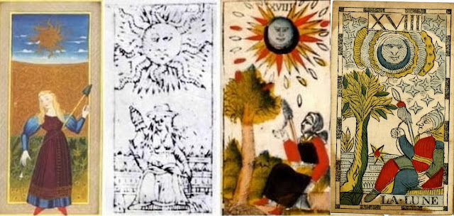
The Esotericists after de Gebelin
De Gebelin's theories of Egyptian origin gave rise to another theory, that the true images and meanings had been lost, and that only by purchasing a certain book or taking a certain course will one understand the true images and meanings, faithfully restored by his disciple Etteilla, who unfortunately cannot give sources because it is an oral tradition. The card corresponding to the Moon is his card 3, which had the upright meaning "Propos" - a generic term meaning proposal, discussion, gossip, news, etc - and reversed, appropriately, Water. It is the upright meaning that is of interest: in the 3rd Cahier he makes it clear that "harmful talk" is what he means. However his followers say, also following Etteilla's teaching, that the surrounding cards help to determine the card's precise meaning. Here one, the gray one is clearly a wolf, no perhaps suggested by the French saying that the time before dawn was that "between the dog and the wolf." But at least the gray one is authentically alert, and the reddish one, corresponding to the color of the sun, appropriately asleep.
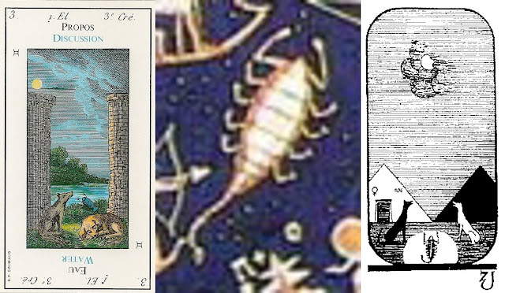
Before long actual Egyptian images came to Paris, both in the form of drawings and the actual objects. Since there was nothing corresponding to Etteilla's cards, a pair of enterprising individuals, an actor and an artist, did their own. The Moon card does not have much recognizably Egyptian except the pyramids, although if the Egyptians had drawn jackals in the way they drew cats, they might have looked like the ones we see. In the Denderah circular zodiac, carried to the Louvre from Egypt, they could have taken the round insect-like creature between Gemini and Leo that we have already seen above. that approximates a crab (even if the legs look more insect=like). It was the Greeks' way of combining Greek teachings with the native Egyptian imagery. But the tarot deiigners instead took the image of a scorpion (above, from a painted reproduction), which probably to them looked more like the crayfish they expected. The odd letter at the bottom right of the Egyptian-style card is more silliness, an Egyptian letter as imagined by another writer on the tarot, Paul Christian, who was a follower of Eliphas Levi. It is the imagined Egyptian original of 18th Hebrew letter, Tzadi. On no basis whatever he assumed that the Hebrews got their alphabet from an Egyptian one, also of 22 letters. Levi had assigned Tzadi to the card, as the 18th triumph.Levi's comments on the card are very short. He gives it the 18th letter of the Hebrew alphabet, Tzadi, and then adds "The elements the visible world, the reflected light, the material forms, symbolism." Of the particular images he says (p. 399 of Greer and Mikituk translation)
Hieroglyph, the Moon; dew, a crawfish in water rising towards the Earth, a dog and a wolf howling at the moon and at the foot of two towers, a path which becomes lost in the horizon and which is sprayed with drops of blood.The drops of blood are a nice touch, which the occultists after him expanded upon. Normally Levi said something about the card in the chapter of the same number in Part One. Chapter 18 is about "Potions and Spells," which seems appropriate, but he says nothing about the card.
Paul Christian has quite a bit more.He gives the keyword "Deceptions" and a meaning in each of the three worlds::
...expresses in the divine world the abysses of the Infinite : in the intellectual world the darkness that cloaks the Spirit when it submits itself to the power of the instincts: in the physical world, deceptions and hidden enemies.About the towers he says that they "symbolise the false security which does not foresee hidden perils."
As for the dogs
"The, hostile spirits, symbolised by one dog, wait in ambush; the servile spirits, symbolised by the other, conceal their treacheries with base flattery; and the idle spirits, symbolised by the crab, will pass by without the slightest concern for disaster. Observe, listen----and learn to keep your own counsel.Rather grim tidings, I'd say. This negative turn of the card all comes from Etteilla, whose cards he worked with before he met Levi.. Levi himself is more balanced. Images are not necessarily false, if they are seen as symbols.

A.E. Waite in 1911 said of his version:
It illuminates our animal nature, types of which are represented below--the dog, the wolf and that which comes up out of the deeps, the nameless and hideous tendency which is lower than the savage beast. It strives to attain manifestation, symbolized by crawling from the abyss of water to the land, but as a rule it sinks back whence it came. The face of the mind directs a calm gaze upon the unrest below; the dew of thought falls; the message is: Peace, be still; and it may be that there shall come a calm upon the animal nature, while the abyss beneath shall cease from giving up a form.This demonization of the unconscious is all very Christian. Before Etteilla, the card spoke more ambiguously.
 Oswald Wirth had a surprisingly different take on the card from his former collaborator Papus. For him the Moon was an enchantress that represents the power of fantasy and imagination to lead us down false paths and idle dreams and speculation. He finds its meaning captured in what we now call the Anonymous Parisian Tarot of the early 17th century, in which a harpist gazes upon a half-naked woman in the upper window, with a firmly locked door.
Oswald Wirth had a surprisingly different take on the card from his former collaborator Papus. For him the Moon was an enchantress that represents the power of fantasy and imagination to lead us down false paths and idle dreams and speculation. He finds its meaning captured in what we now call the Anonymous Parisian Tarot of the early 17th century, in which a harpist gazes upon a half-naked woman in the upper window, with a firmly locked door.Where truth lies, he says, is with the crustacean, which, like his real-life counterpart, "devours everything that is rotten" (1980 translation, p. 138).He keeps the foul swamp from emitting foul odors.If it walks backwards, that is because its domain is the past. It is red to denote the inner fire within, which gives it the energy "to fulfill its mission of making things salubrious." He compares the animal to the Egyptian scarab, "a symbol of moral and spiritual regeneration," which by Wirth's time was confirmed by modern Egyptology, although such symbolism had already been suggested by Horapollo, already known in the 15th century.
The dogs and towers are also helpful. He agrees with de Gebelin about their symbolism, but also psychologizes it, that they are to keep our fancies from going to far one way or another. The white dog represents dogma and received opinion, while the black dog, lying on the earth, represents the positivism that refuses to go any further than empirical observation. The pilgrim walks between them, "and they do not bite". The towers give similar warnings: the one on the left warning that curiosity can lead to the loss of salvation, the one onthe right warning that succumbing to Hecate's lures can cause one to luse one's reason.
To ignore these warnings is indeed a risk, for "summoned to submit to the fearful trials of initiation, he will go into athe darkness of a thick forest where ghosts will brush past him." Then, climbing a precipice, he will fall, become dirty, purify himself in the water, and wander the arid desert at the bottom of the card. The result is to "give objective form to his thought" via imagination, but still without understanding. "Although Hecate is deceiving we must pass through her school not to be the dupe of her".
 For Paul Foster case in Tarot Fundamentals the essence of the card is the emergence of consciousness out of subconsciousness, in a journey of return to the cosmic source. The moon symbolizes reflection and the turning of energy back to its source (Lesson 40, p. 1) Little by little consciousness evolves, first from the mineral and the vegetable, then crawling out of the subconscious like the crustacean, then evolving to the wolf, symbolizing nature, and the dog, bred and trained by man, Art. (p. 2) Further down the path are the two giant towers, human structures indicating the limits of ordinary experience. He says they are not really towers but walls, to indicate the vastness of experience and sensation beyond the ordinary limits.(p. 3)
For Paul Foster case in Tarot Fundamentals the essence of the card is the emergence of consciousness out of subconsciousness, in a journey of return to the cosmic source. The moon symbolizes reflection and the turning of energy back to its source (Lesson 40, p. 1) Little by little consciousness evolves, first from the mineral and the vegetable, then crawling out of the subconscious like the crustacean, then evolving to the wolf, symbolizing nature, and the dog, bred and trained by man, Art. (p. 2) Further down the path are the two giant towers, human structures indicating the limits of ordinary experience. He says they are not really towers but walls, to indicate the vastness of experience and sensation beyond the ordinary limits.(p. 3)He associates the crayfish with the scorpion because Scorpio is the type of "purpose, determination, and pertinacity" (p. 2) needed to follow the path through its ups and downs. There are 32 rays emanating from the Moon, representing "the sum-total of the cosmic forces at work in the human personality" (p. 3). The 18 little yods with specks of red, he says, indicates the combination of solar energy with the vital force in the blood, a force which n the human body is controlled by the subconscious. (p. 4).
The path to be followed at first has just ups and downs but later becomes very steep. It is the steep path of many traditions, also narrow, he says, balanced between "the conditions of nature and such modifications of these conditions as are possible to art." (p. 5) The goal is "true Self-recognition, correct perception of the universal I AM, and mental identification with that ONE REALITY." (p. 5)
JUNGIAN INTERPRETATIONS
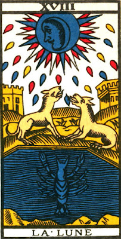
Sallie Nichols identifies the scene on Paul Marteau's 1932 Tarot of Marseille card as one of great aloneness in a vast wasteland shrouded in darkness. The crab represents the hero reduced to the level of a primeval animal, crawling out of the water of the unconscious.The drops seem to be pulling his energy toward the Moon, like a great "devouring mother, sucking up all creative energy from the earth, leaving it desolate and barren." it is the "dark night of the soul," as the mystics called it. The "rapacious hounds" also deflect the hero from purposive action. He can result in Lunacy, succumbing to the spell of the black witch Hecate.Yet it is part of the Jungian approach to look for ambiguity and different approaches. Yelping dogs as representative of instinctual responses can also be heard as pleas for help, perhaps by consciousness. At the same time, they can "sniff out" the ssence of those who approach them.
Here I would add that in the specific context of barking at the moon, we may also think of the interpretation of that image made by Andrea Alciati in the 16th century Emblemata, for which he writes (http://www.mun.ca/alciato/e165.html):
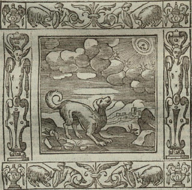A dog gazes at the moon by night, as if at a mirror. And seeing himself, he believes another dog is in the moon. So he barks; but his ineffectual voice is carried away in vain by the winds, and Diana pursues her course without hearing.The dogs, or dog and wolf, do not know that the moon is so far away that their barking can have no effect. Also they do not realize that this object is too far away to do them harm. Instinctively we fear that which we do not understand. In that case it may be better to try to understand better before lashing out, while at the same time keeping our distance.
 To return to Nichols: The crayfish, with his hard shell, may be offering us something to stand on as we cross the "moat," as she calls it. And the drops may merely represent the "discarded memories and forgotten dreams of man," to be returned in the morning as nourishment. In this regard she finds the card of Manley Hall more inspiring than others.There is a well trodden path, and the two beasts seem more relaxed. The red shell does give off an energizing glow. The wolf and dog motif suggest, of course, a middle path between instinctual wildness and domesticated adaptation. There is a even a figure on the path. The drops, morever, are clearlyin the shape of falling tears, as opposed to the uward direction of most Moon cards..
To return to Nichols: The crayfish, with his hard shell, may be offering us something to stand on as we cross the "moat," as she calls it. And the drops may merely represent the "discarded memories and forgotten dreams of man," to be returned in the morning as nourishment. In this regard she finds the card of Manley Hall more inspiring than others.There is a well trodden path, and the two beasts seem more relaxed. The red shell does give off an energizing glow. The wolf and dog motif suggest, of course, a middle path between instinctual wildness and domesticated adaptation. There is a even a figure on the path. The drops, morever, are clearlyin the shape of falling tears, as opposed to the uward direction of most Moon cards..Yet it is the Marseille version (more properly, Marteau's of 1930) that provides the numinosity, the sacredness. But "terror dissolves in awe. The Moon goddess of the Terrible Night is also the giver of dreams, the revealer of hidden mysteries." She quotes Jung, "One does not become enlightened by imagining figures of light, but by making the darkness conscious." But it is more than that: the figures brought forth from the unconscious are not only dark, but hold the beginnings of the light. Here Nichols invokes the image of the scarab, which I mentioned earlier. She holds it to be a symbol of immortality, whereas, it may be recalled, Wirth considered it to be one of regeneration, probably having seen drawings of them next to the mouths of the deceased in tomb paintings. They are probably both right, and we should not discount that symbol's influence on how the crayfish or lobster was viewed in the centuries after it was put on the card, based on an identification between it and the symbol of the scarab as put on the Greco-Egyptian zodiacs. I have given one; another is on a "long" zodiac in the same complex, at the beginning of the sequence, as it starts on the summer solstice.

...when the male wishes to have offspring, he takes some cow-dung and makes a round ball of it, very much in the shape of the world. Rolling it with its hind legs from east to west, he faces the east, so that he gives it the shape of the world, which is borne from east to west. then, burying this ball, it leaves it in the ground for twenty-eight days, during which time the moon traverses the twelve signs of the zodiac. Remaining here, the beetle is brought to birth. And on the twenty-ninth day when it breaks the ball open, it rolls it into the water. For it considers that this day is the conjunction of the moon and the sun, as well as the birth of the world. When it is opened in the water, animals emerge which are beetles. ...Horapollo goes on to describe three types of this beetle: one has rays emanating sun-like from its body, thus sacred to the sun, another is two-horned and bull-shaped, thus sacred to the Moon; and the third is one-horned, like an Ibis's beak, and so sacred to Hermes/Thoth. The creature in the zodiacs has both two "horns" and ray-like legs, so apparently sacred to both the sun and the moon.
In that light I would observe that even Marteau's creature, who after all used an old woodcut block, has the horn-like appendages on the creature's head. Moreover, between the crayfish's claws there is the same strange objects in its claws,like a jewel, an appropriate symbol for that which one who explores one's unconscious depths can take if one conquers one's fear.
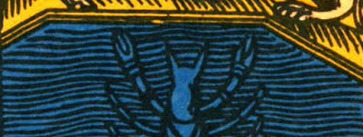
But let us turn to Jung himself, in "Archetypes of the Collective Unconscious" (https://archive.org/stream/collectedworksof91cgju/collectedworksof91cgju_djvu.txt, original version 1934, revised 1954):
We must surely go the way of the waters, which always tend downward, if we are to raise up the treasure, the precious heritage of the father. In the Gnostic hymn to the soul, the son is sent forth by the parents to seek the pearl that fell from his father's crown. It lies at the bottom of a deep well, guarded by a dragon, in the land of the Egyptians--that land of fleshpots and drunkenness with all its spiritual and material riches. The son and heir sets out to fetch the jewel, but forgets himself and his task in the orgies of Egyptian worldliness, until a letter from his father reminds him what his duty is. He then sets out for the water and plunges into the dark depths of the well, where he finds the pearl on the bottom, and in the end offers it to the highest divinity.
I must interrupt here to quote some of the poem, where it is clear that it is not a well but more like the card, the sea, where the pearl lies with the dragon. It is from the apocrophal work The Acts of Thomas. I do not know if this text was known in 1500; it certainly was by Noblet's time.
First here is his father's admonition to him, stating also the son's promised reward (http://gnosis.org/library/hymnpearl.htm#wright):
"If thou goest down into Egypt,
and bringest the one pearl,
which is in the midst of the sea
around the loud-breathing serpent,
thou shalt put on thy glittering robe
and thy toga, with which (thou art) contented,
and with thy brother, who is next to us in authority,
thou shalt be heir in our kingdom."
Then, after he has forgotten and gets the reminder letter, he finally responds:
I remembered the pearl,
for which I had been sent to Egypt,and I began to charm him,
the terrible loud breathing serpent.I hushed him asleep and lulled him into slumber,
for my father's name I named over him,and the name of our second (in power),
and the of my mother, the queen of the East.And I snatched away the pearl,and turned to go back to my father's house.And their filthy and unclean dress I stripped off,and left it in their country;
Naturally he will encounter his robe on the way back, but that is getting ahead of ourselves. His method of conquering the serpent is similar to that of Mercury with Argus, the hundred-eyed Giant, whose treasure had been the maiden Io. Zeus, caught by Hera in the act of seducing her, had turned her into a young heifer, but he was forced to give it to Hera, who puts Argus in charge of guarding her. Zeus delegates Mercury with the task of rescuing her, and after many hours playing on his pipes he manages to put Argus to sleep. Io was a Naiad, i.e. a water nymph, like the Star-lady. If we think of Io as a special part of the soul, close to the source, the two stories have a similar resolution, although of course Mercury is not distracted by all the things of Egypt. When all the eyes close and Mercury cuts off Argus's head, she is free of Argus but not of Hera, who sends a gadfly to torment her. She eventually ends up in Egypt, where she is the founder of kings, and so closely associated with Isis.
Here is what Jung says about the Hymn of the Pearl:
Mankind looked and waited, and it was a fish (levatus de profundo, Augustin Confessions) that became the the symbol of the saviour, the bringer of healing.
Here we might recall also what form the grail takes in von Eschenbach's version: that of a stone that had fallen from heaven; iit has healing powers for those who approach it in the right way.
Jung then quotes from an unknown correspondent who writes that he is continually dreaming of water, either he is taking a bath and the tub is about to overflow, or a water-pipe bursts and his house slides to the edge of a body of water, or the toilet is overflowing, etc. Jung comments:
This analysis of course relates well to the card, which not only has the water, but also the dragon-like crayfish within, even if it does not seem unconscious. Jung next refers to a Protestant theologian's dream:Water is the commonest symbol of the unconscious. The lake in the valley is the unconscious, wich lies, as it were, underneath Water is the valley spirit, the water-dragon of Tao, whose nature resembles water, a yang embraced in a yin. Psychologically therefore water means spirit that has become unconscious.
he stood on a mountain slope and looked down onto a dark lake. He knew in the dream that something had always prevented him from approaching the lake, and this time he resolved to go to the water. As he approached the shore everything became dark and uncanny, and a gust of wind rushed over the face of the water. He was seized by a panic fear and awoke.Jung comments later:
The dream of the theologian is therefore quite right in telling him that down by the water he could experience the working of the living spirit like a miracle of healing at the pool of Bethesda. The descent into the depths always seems to precede the ascent.Then Jung relates yet another another dream by another Protestant theologian, where the dreamer saw on a mountain a kind of Grail Castle. He followed a road that seemed to lead right to the foot of the mountain. But then he saw "that a chasm separated him from the mountain, a deep, darksome gorge with underworldly water rushing along the bottom," after which he could see the path rising again. "But the prospect looked uninviting, and the dreamer awoke." Jung comments:
The prudent man avoids the danger lurking in these depths, but he also throws away the good which a bold but imprudent venture might bring.Going down into the depths involves going inside oneself, away from all the information coming to the senses and the sense-organs themselves, away from the intellect that built the towers, away from the instinctual responses of the dogs, to the sympathetic nervous system, which
...maintains the balance of life and, through the mysterious paths of sympathetic excitation, not only gives us the knowledge of the innermost life of other beings but also has an effect on them." (para. 41)It is the experience of life beyond the shadow, that is to say the disowned parts of oneself. The shadow is like a door, and inside:
It is the world of water, where all life floats in suspension, the realm of the sympathetic nervous system, where the soul of everything begins; where I am indivisibly this and that; where I experience the other in myself and the other-than-myself experiences me.The crayfish has a kind of cerebro-skeletal nervous system, but its skeleton is all on the outside.The division between inner and outer is a fairly sharp one. so that it is only necessary to go inside.
Finally Jung returns to the treasure:
Our concern with the unconscious has become a vital question for us— a question of spiritual being or non-being. All those who have had an experience like that mentioned in the dream know that the treasure lies in the depths of the water and will try to salvage it. As they must never forget who they are, they must on no account imperil their consciousness. They will keep their standpoint firmly anchored to the earth, and will thus— to preserve the metaphor— become fishers who catch with hook and net what swims in the water.
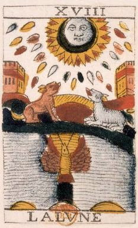
All this is well and good. But is the crayfish really a fish, as opposed to a dragon? If not, how do we put the dragon to sleep without losing the pearl, too? It seems to me one must be on the ground and also in the water, breathing like the crayfish and feeling the lunar energy that crayfish reportedly feel, so as to navigate successfully the ebb and flow of the tides, even if they are far upstream. Perhaps it will give up its treasure of its own accord. In one version of the card, the Noblet, there is even a yellow patch between the crayfish's two arms, as though a kind of sandbar one could kneel on while receiving the pearl. And if the creature is not so inclinded, there are also lobster-traps, if only it will go inside; trapping is perhaps analogous to putting Argus to sleep. In comparing the pearl to the healing object, Jung's reference to a fish is to suggest Christ, whose symbol was the fish. Noblet's quite gratuitous black strip below the tail suggests to me the bottom of a pole, and the crayfish's outstretched arms and upright posture, it seems to me, suggest the crucified Christ.